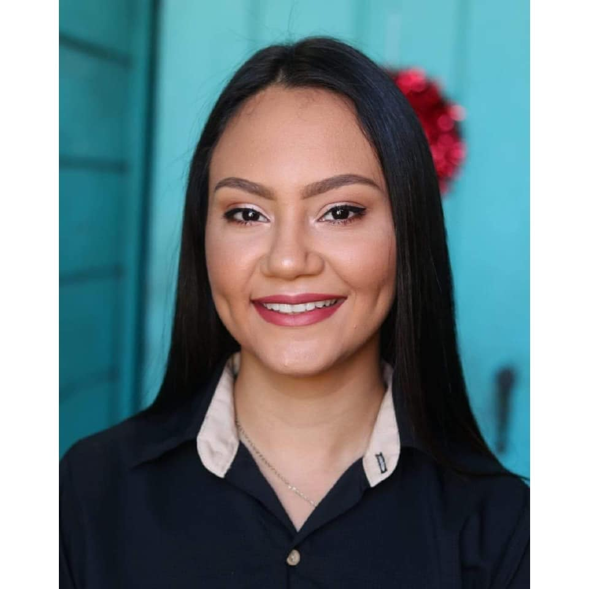

Datos Personales
-

- Nombre: María Camila
- Apellidos: Sánchez Bejarano
- Nro cedula: 118010167
- Fecha de nacimiento : 18/01/01
- Lugar de nac: San José
- Nacionalidad: Costarricense
- Lugar de residencia: San Mateo, Alajuela, Costa Rica, 20401
- Edad: 22
- Nro de telefono: 70450870
- Correo Electronico: riamaca01@gmail.com
Datos Academicos:
- 2019- Colegio Técnico Profesional de San Mateo- Bachillerato
- 2019- Colegio Técnico Profesional de San Mateo- Técnico Medio en Informatica en Soporte
- 2020-Presente- Universidad Técnica Nacional Sede Pacífico- Diplomado en Ing. Tecnologías de la Información
Capacitaciones:
Nombre de la capacitación: Desarrollo de habilidades avanzadas en Tecnologías de la Información
Duración: 4 meses
Año: 2021
Institución:InstitutoNacional de Aprendizaje
Links:
Referencias
- Nombre completo: Bryan Arias Valverde
- Empresa: AyA
- Telefono: 89743256
- Correo Electronico: bariasaya@gmail.co.cr